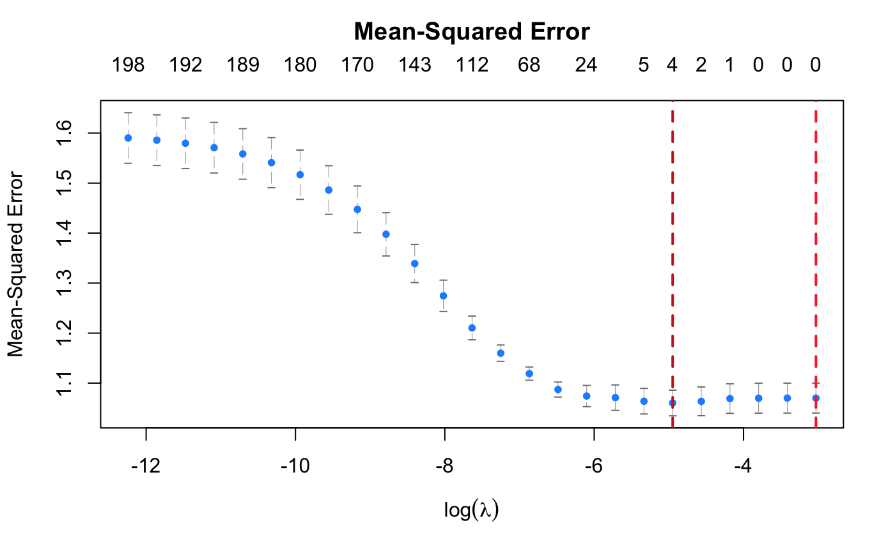
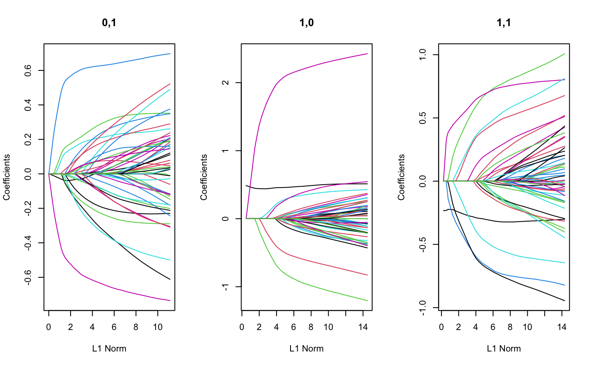

R/plot_cv_vennLasso.R, R/plot_vennLasso.R
plot.RdPlot method for cv.vennLasso fitted objects
Plotting method for vennLasso fitted objects
# S3 method for cv.vennLasso plot(x, sign.lambda = 1, ...) # S3 method for vennLasso plot( x, which.subpop = 1, xvar = c("norm", "lambda", "loglambda", "dev"), xlab = iname, ylab = "Coefficients", ... )
| x | fitted |
|---|---|
| sign.lambda | Either plot against log(lambda) (default) or its negative if |
| ... | other graphical parameters for the plot |
| which.subpop | which row in the coefficient matrix should be plotting? Each row corresponds to a particular combination of the specified stratifying variables |
| xvar | What is on the X-axis. "norm" plots against the L1-norm of the coefficients, "lambda" against the log-lambda sequence, and "dev" against the percent deviance explained. |
| xlab | character value supplied for x-axis label |
| ylab | character value supplied for y-axis label |
set.seed(123) dat.sim <- genHierSparseData(ncats = 3, nvars = 25, nobs = 100, hier.sparsity.param = 0.5, prop.zero.vars = 0.5, effect.size.max = 0.25, family = "gaussian") x <- dat.sim$x x.test <- dat.sim$x.test y <- dat.sim$y y.test <- dat.sim$y.test grp <- dat.sim$group.ind grp.test <- dat.sim$group.ind.test fit.adapt <- cv.vennLasso(x, y, grp, adaptive.lasso = TRUE, nlambda = 25, nfolds = 4) plot(fit.adapt)library(Matrix) set.seed(123) n.obs <- 200 n.vars <- 50 true.beta.mat <- array(NA, dim = c(3, n.vars)) true.beta.mat[1,] <- c(-0.5, -1, 0, 0, 2, rep(0, n.vars - 5)) true.beta.mat[2,] <- c(0.5, 0.5, -0.5, -0.5, 1, -1, rep(0, n.vars - 6)) true.beta.mat[3,] <- c(0, 0, 1, 1, -1, rep(0, n.vars - 5)) rownames(true.beta.mat) <- c("1,0", "1,1", "0,1") true.beta <- as.vector(t(true.beta.mat)) x.sub1 <- matrix(rnorm(n.obs * n.vars), n.obs, n.vars) x.sub2 <- matrix(rnorm(n.obs * n.vars), n.obs, n.vars) x.sub3 <- matrix(rnorm(n.obs * n.vars), n.obs, n.vars) x <- as.matrix(rbind(x.sub1, x.sub2, x.sub3)) conditions <- as.matrix(cbind(c(rep(1, 2 * n.obs), rep(0, n.obs)), c(rep(0, n.obs), rep(1, 2 * n.obs)))) y <- rnorm(n.obs * 3, sd = 3) + drop(as.matrix(bdiag(x.sub1, x.sub2, x.sub3)) %*% true.beta) fit <- vennLasso(x = x, y = y, groups = conditions) layout(matrix(1:3, ncol = 3)) plot(fit, which.subpop = 1) plot(fit, which.subpop = 2) plot(fit, which.subpop = 3)